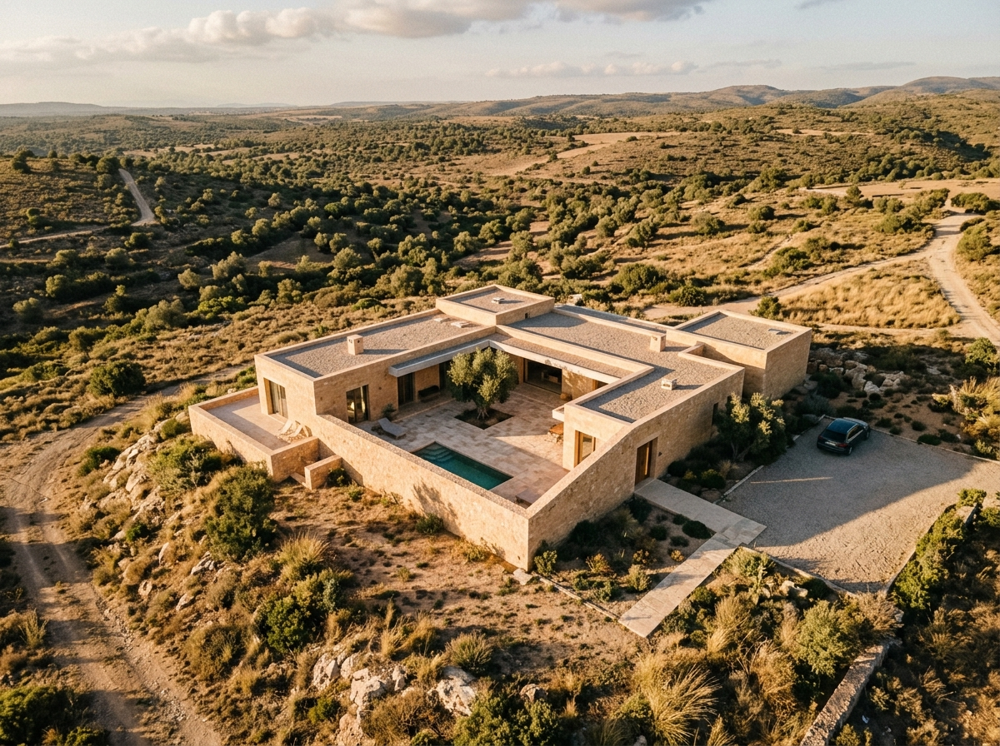
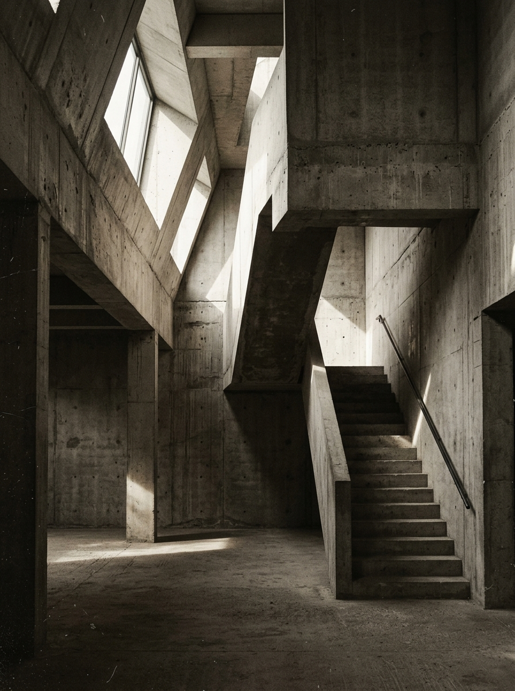
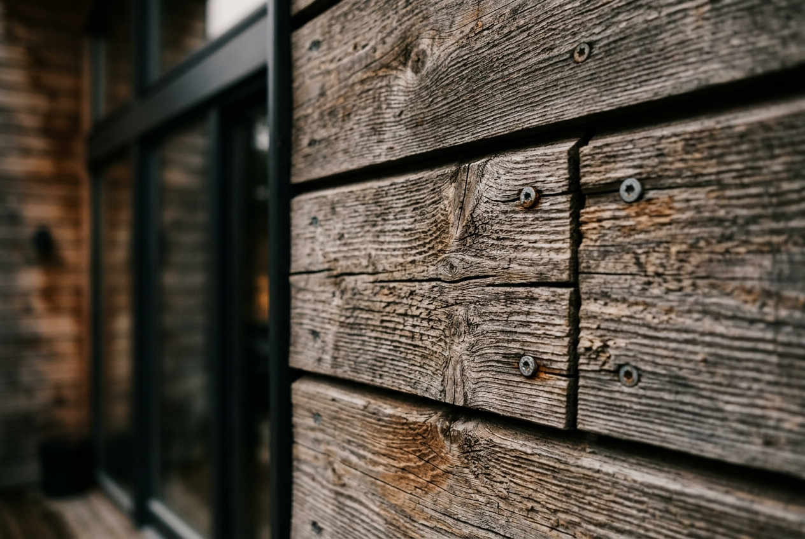

Buildings
that remember
the ground
Architecture practice, Mumbai.
Concrete, timber, difficult sites.

Selected Work

Practice
Mānasa was founded in 2008 in a rented Colaba office with two desks and a borrowed plotter. We still work from the same neighbourhood, though we've since acquired our own plotter.
The practice is ten people. We take on three to four projects at a time. This is deliberate — we've found that the quality of attention drops sharply beyond four concurrent commissions. We turn down more work than we accept.
Our projects tend toward the institutional and residential. We're drawn to sites that are constrained: steep, narrow, burdened by regulation, or simply difficult to love. Most of our built work is in Maharashtra and Kerala, with two completed projects in Rajasthan.
Materials matter more to us than form. We work primarily in exposed concrete, local stone, and reclaimed timber. We don't specify materials we haven't visited at source. This limits our palette but deepens our understanding of what each material can bear.
Approach
Site reading
Every project begins with a full day on site. No cameras on the first visit. We walk the boundaries, note the prevailing wind, watch where the water settles. The brief comes second.
Material sourcing
We visit every quarry, mill, and yard before specifying. If we can't see how a stone was cut or a timber was seasoned, we don't use it. This has cost us two commissions. We're comfortable with that.
Physical models
We build every scheme as a 1:100 study model before committing to drawings. Renders are produced last, if at all. Our clients hold the model before they see a screen.
Construction oversight
A principal visits site weekly during construction. We've found that details survive when the architect is present. When they're not, junctions get simplified, reveals get filled, and the building quietly becomes something else.
Contact
For new project enquiries, write to us with a brief description of the site, the programme, and a realistic timeline. We respond to every letter within five working days.
Mānasa Architecture & Design
4th Floor, Cusrow Baug
Colaba, Mumbai 400 001
+91 22 2283 4100
We do not accept speculative briefs, design competitions, or requests for free feasibility studies. We're a small practice and must be selective with our time.